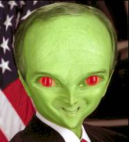
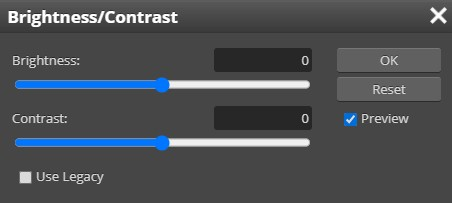
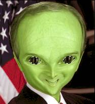
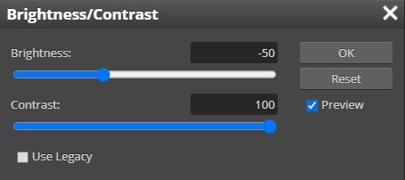

| Step 4: YOUR EYES |
Step 1: Alien |
Step 2: Head | Step 3: Green Skin |
Aliens not only have large eyes, but they have large dark eyes.
Use the Quick Mask mode to select
your eyes (reread Step 3 if you don’t remember how to use the Quick Mask mode)...

Press the Q key to exit Quick Mask mode and then invert the selection - just your eyes should now be selected
Click Image then point at Adjustments and click Brightness/Contrast...

Move the Contrast slider all the way to the right,
then move the Brightness slider to the left to darken the eyes until
you get something you like...

For my character, I used a Brightness of -50 and a Contrast of 100...

Remember that your numbers may be different from mine
Click OK
Press Ctrl+D to deselect your image
Your eyes probably have have an edge on them now, sooooooo:
Use the Blur Tool to go around the edge of both of your eyes and fix the hard edge
Save your work in your Alien folder
Up next, we will give your alien a tail.
|
Step 1: Alien | Step 2: Head | Step 3: Green Skin | Step 4: Eyes | Step 5: Tail | Step 6: The Background |